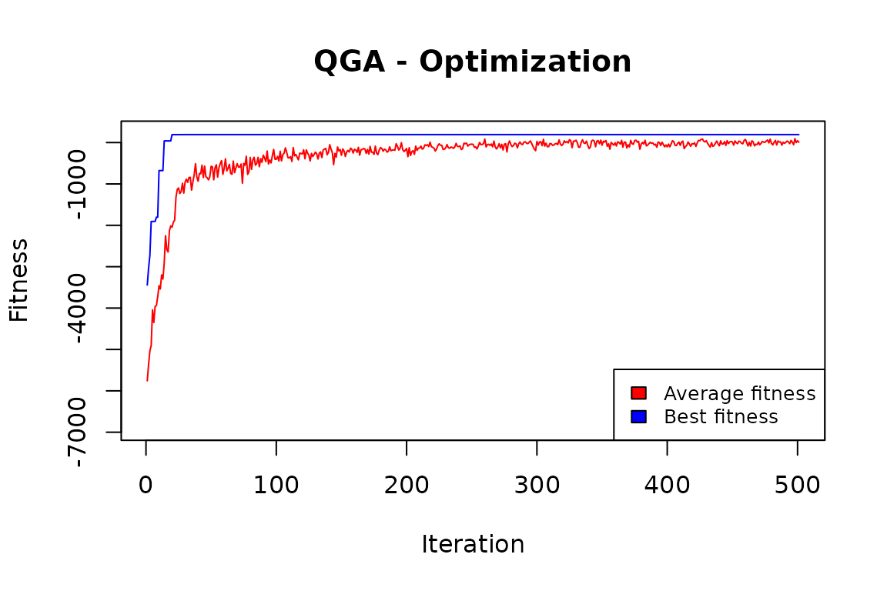

This package implements the Quantum Genetic Algorithm that was first proposed by Han and Kim (2000). A complete illustration of the class of quantum genetic algorithms is in Zhang (2011). Other useful reviews are contained in Nowotniak (2010) and in by Lahoz-Beltra (2016).
This R implementation takes ideas from the Python implementation by Lahoz-Beltra (2008).
In this package, each optimization problem is represented as a maximization one, where each solution is a sequence of (qu)bits. Following the quantum paradigm, these qubits are in a superposition state: when measuring them, they collapse in a 0 or 1 state. After measurement, the fitness of the solution is calculated as in usual genetic algorithms.
The evolution at each iteration is oriented by the application of two quantum gates to the amplitudes of the qubits:
The rotation is based on the theta angle values: higher values allow a quicker evolution, and lower values avoid local maxima.
The Pauli-X gate is equivalent to the classical mutation operator and determines the swap between alfa and beta amplitudes of a given qubit.
The package has been developed in such a way as to permit a complete separation between the “engine”, and the particular problem subject to combinatorial optimization.
In the following, the implementation of three specific problems will be presented by illustrating the case of the “knapsack” problem.
“The knapsack problem is the following problem in combinatorial optimization: given a set of items, each with a weight and a value, determine which items to include in the collection so that the total weight is less than or equal to a given limit and the total value is as large as possible. It derives its name from the problem faced by someone who is constrained by a fixed-size knapsack and must fill it with the most valuable items.” (from Wikipedia).
The following fitness evaluation function is defined:
KnapsackProblem <- function(solution,eval_func_inputs) {
solution <- solution - 1
items <- eval_func_inputs[[1]]
maxweight <- eval_func_inputs[[2]]
# Fitness
tot_items <- sum(solution)
# Penalization
if (sum(items$weight[solution]) > maxweight) {
tot_items <- tot_items - (sum(items$weight[solution]) - maxweight)
}
return(tot_items)
}This function receives as input parameters:
items <- as.data.frame(list(Item = paste0("item",c(1:500)),
weight = rep(NA,500)))
set.seed(1234)
items$weight <- rnorm(500,mean=200,sd=80)
head(items)
#> Item weight
#> 1 item1 103.43474
#> 2 item2 222.19434
#> 3 item3 286.75529
#> 4 item4 12.34418
#> 5 item5 234.32998
#> 6 item6 240.48447So, we have generated a set of 500 items, each with a given weight drawn from a normal distribution, with a mean equal to 200 and a standard deviation equal to 80. Then, we have set the maximum permissible sum of weights equal to one-fifth of the total sum of weights.
We define the Genome parameter as the number of items, and the number of values equal to 2. Each solution is a vector of 300 elements, each with an assigned value of 1 (not included in the knapsack) or 2 (included in the knapsack).
popsize = 20
generation_max = 500
nvalues_sol = 2
Genome = nrow(items)
thetainit = 3.1415926535 * 0.05
thetaend = 3.1415926535 * 0.025
pop_mutation_rate_init = 1/(popsize + 1)
pop_mutation_rate_end = 1/(popsize + 1)
mutation_rate_init = 1/(Genome+1)
mutation_rate_end = 2/(Genome+1)
mutation_flag = TRUE
plotting = FALSE
verbose = FALSE
progress = FALSE
eval_fitness = KnapsackProblem
eval_func_inputs = list(items,maxweight)Moreover, we want to iterate 500 times, each time considering 20 generated solutions. At the beginning, the rotation rate will be ‘3.1415926535 * 0.1’, while at the end it will be the half (to be more sensitive to slight variations). The opposite for the mutation rate.
The output of the QGA function is a list with two elements:
In our case:
QGA:::plot_Output(knapsackSolution [[2]])
The plot indicates that the number of iterations was enough to obtain a solution that is likely to be no further improved.
best <- knapsackSolution[[1]] - 1
sum(best)
#> [1] 193That is, 193 items out of 500 have been included in the knapsack.
sum(items$weight[best])
#> [1] 19962.9
maxweight
#> [1] 20014.71The sum of the weights of included items is very close to the constrained maximum weight.